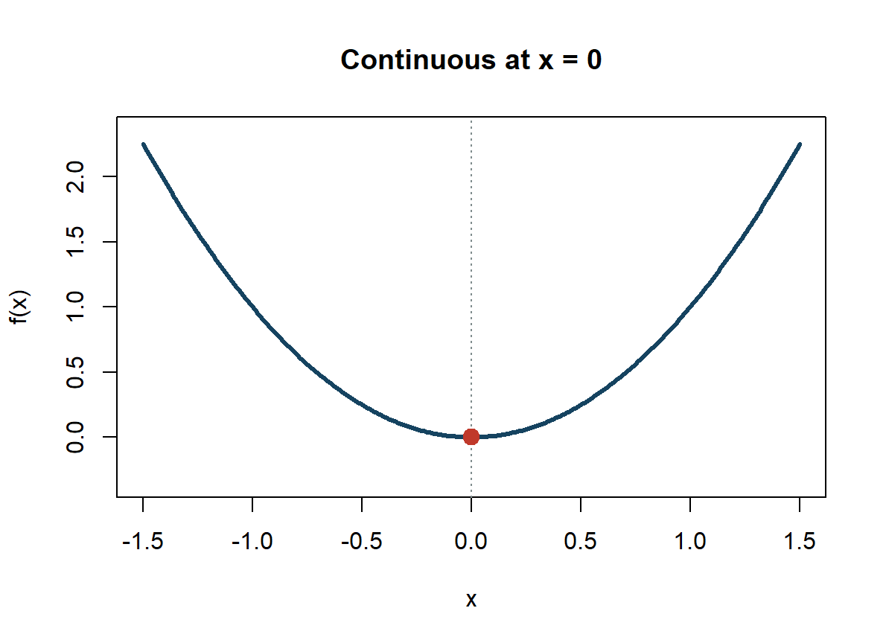
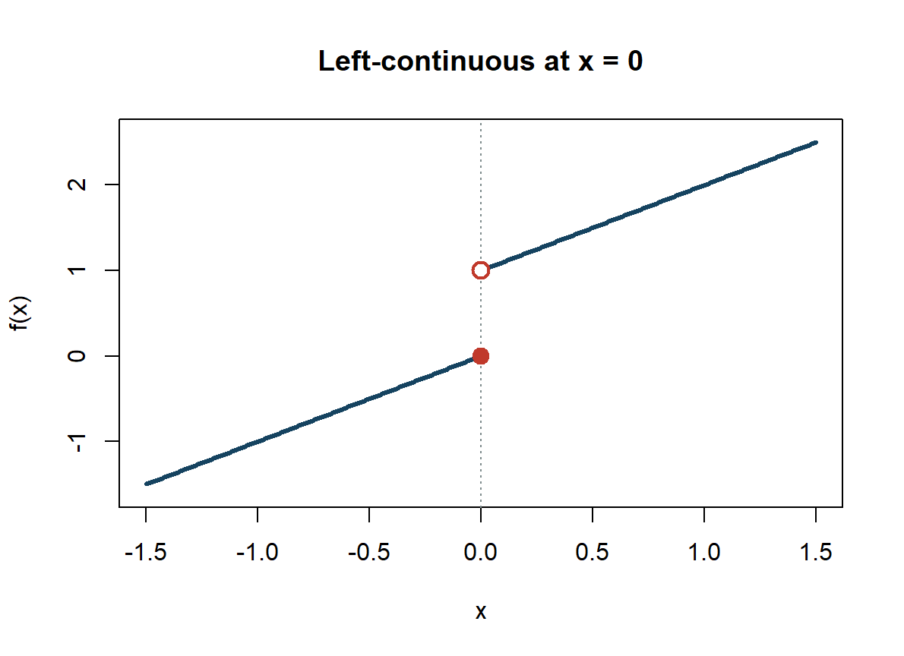
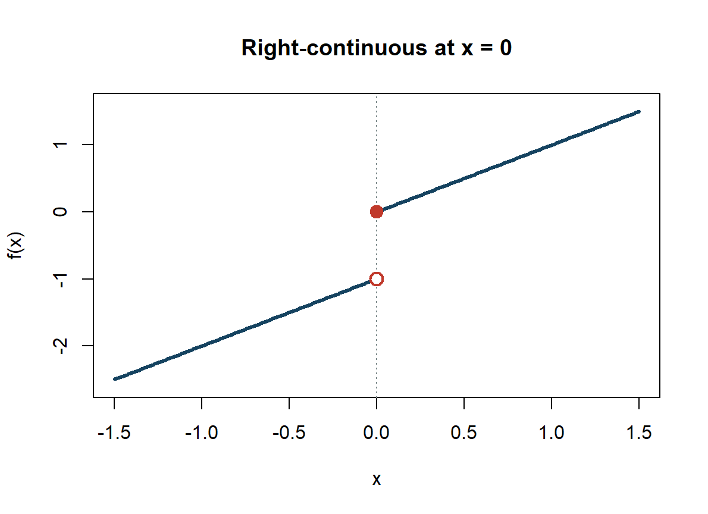
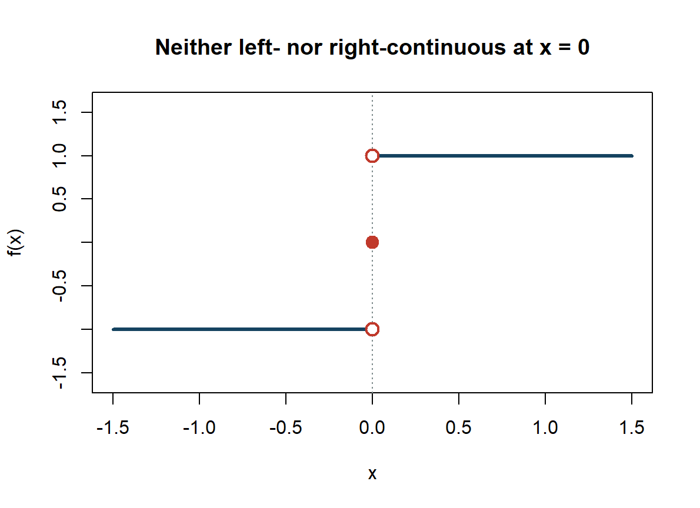
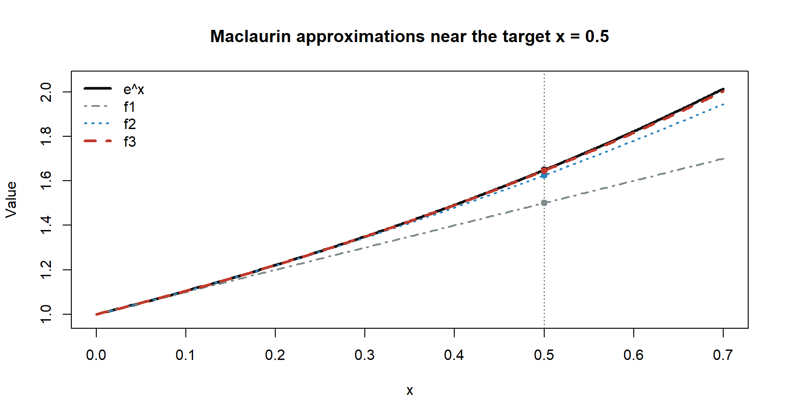
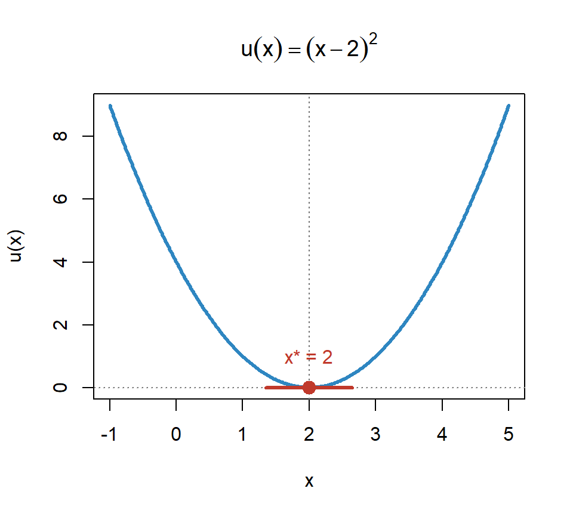
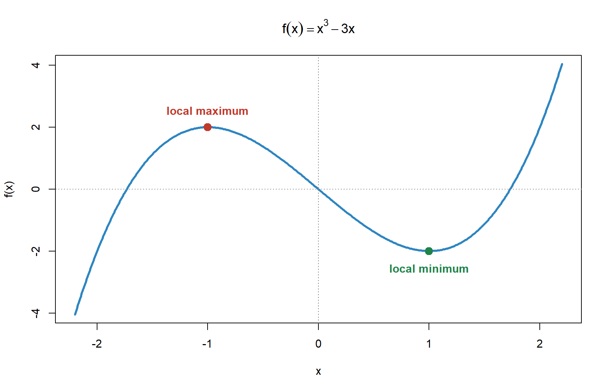
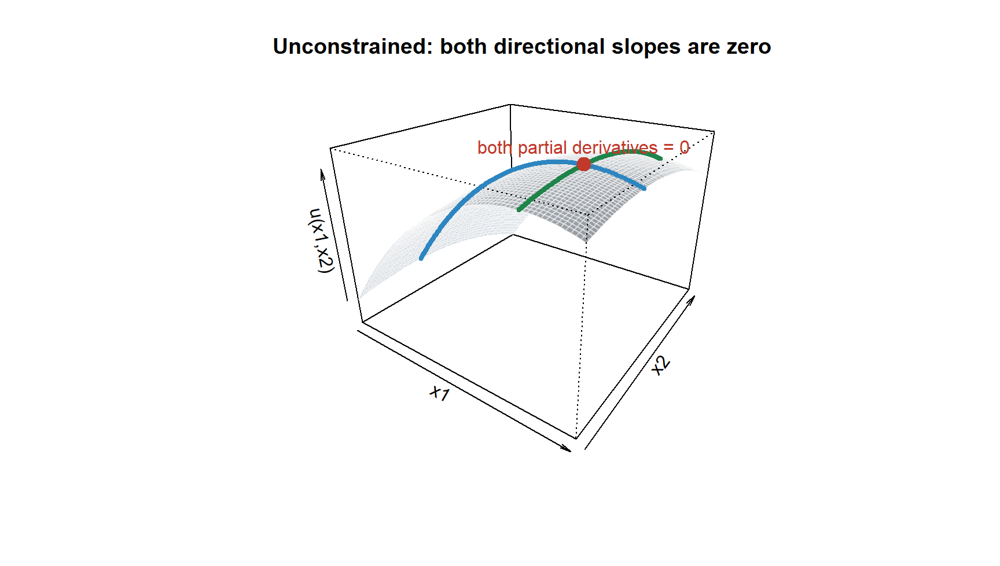
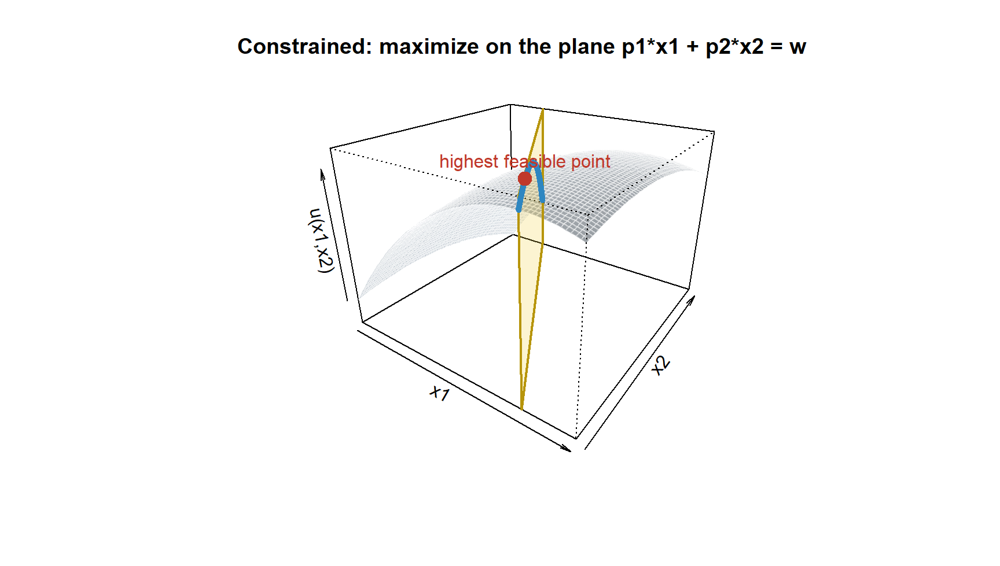

EPPS Math and Coding Camp
Calculus
Instructor: Haien Peng
Our path today
Single-variable derivatives
↓
Multivariable derivatives
↓
Optimization
By the end, you should be able to read, compute, and interpret the calculus used in quantitative analysis.
Learning objectives
By the end of this session, you should be able to:
- interpret and compute one-variable derivatives;
- compute partial derivatives, gradients, and Hessians;
- use implicit differentiation for relationships defined by equations;
- use Taylor polynomials to approximate smooth functions;
- solve unconstrained and equality-constrained problems, and recognize when KKT conditions are needed.
1. Marginal change
A limit and a function value answer different questions
\[ \begin{array}{c|c} \displaystyle \lim_{x\to a}f(x) & f(a)\\ \hline \text{What value does }f(x)\text{ approach near }a? & \text{What is the value exactly at }a? \end{array} \]
The limit depends on values around \(a\), not on the value assigned at \(a\). Therefore, \(\lim_{x\to a}f(x)\) and \(f(a)\) may be different, and one may exist even when the other does not.
\[ \lim_{x\to a}f(x)=L \]
means that \(f(x)\) can be made arbitrarily close to \(L\) by taking \(x\) sufficiently close to \(a\), with \(x\ne a\).
One-sided limits distinguish continuity at a point
Around \(x=a\), define
\[ L_- = \lim_{x\to a^-}f(x), \qquad f(a), \qquad L_+ = \lim_{x\to a^+}f(x). \]
- \(f\) is continuous at \(a\) when \(L_-=L_+=f(a)\).
- \(f\) is left-continuous when \(L_-=f(a)\), and right-continuous when \(L_+=f(a)\).
Continuous: both sides meet the function value
Let
\[ f(x)=x^2. \]
At \(x=0\),
\[ \begin{aligned} \lim_{x\to0^-}f(x)&=0,\\ \lim_{x\to0^+}f(x)&=0,\\ f(0)&=0. \end{aligned} \]
The graph has no break at the point.
Left-continuous only: the left side matches the value
Let
\[ f(x)= \begin{cases} x, & x\le 0,\\ x+1, & x>0. \end{cases} \]
Then
\[ \begin{aligned} \lim_{x\to0^-}f(x)&=f(0)=0,\\ \lim_{x\to0^+}f(x)&=1. \end{aligned} \]

Right-continuous only: the right side matches the value
Let
\[ f(x)= \begin{cases} x-1, & x<0,\\ x, & x\ge 0. \end{cases} \]
Then
\[ \begin{aligned} \lim_{x\to0^-}f(x)&=-1,\\ \lim_{x\to0^+}f(x)&=f(0)=0. \end{aligned} \]

Neither side matches the function value
Let
\[ f(x)= \begin{cases} -1, & x<0,\\ 0, & x=0,\\ 1, & x>0. \end{cases} \]
Here
\[ \begin{aligned} \lim_{x\to0^-}f(x)&=-1,\\ f(0)&=0,\\ \lim_{x\to0^+}f(x)&=1. \end{aligned} \]

Exercise 1: is the function continuous?
Consider
\[ f(x)= \begin{cases} \dfrac{x^2-1}{x-1}, & x\ne1,\\[6pt] 2, & x=1. \end{cases} \]
At \(x=1\):
- Find \(\displaystyle\lim_{x\to1^-}f(x)\) and \(\displaystyle\lim_{x\to1^+}f(x)\).
- Find \(f(1)\).
- Is \(f\) continuous at \(x=1\)? Justify your answer using the definition of continuity.
A derivative is a local comparison
For a function \(y=f(x)\),
\[ f'(x)=y'=\frac{dy}{dx} =\lim_{h\to 0}\frac{f(x+h)-f(x)}{h}. \]
This derivative exists when the limit is finite and the same for every way that \(h\) approaches zero.
- Numerator: change in the outcome.
- Denominator: change in the input.
- Limit: make the comparison local.
Economically, \(f'(x)\) is a marginal effect, holding the model fixed.
Use the definition once: \(f(x)=x^2\)
For
\[ f(x)=x^2, \]
apply the definition:
\[ f'(x)=\lim_{h\to0}\frac{(x+h)^2-x^2}{h}. \]
After simplifying and taking the limit,
\[ f'(x)=2x, \qquad f'(3)=6. \]
Exercise 2: differentiate from the definition
Let
\[f(x)=x^2+x+1.\]
Using only
\[ f'(x)=\lim_{h\to0}\frac{f(x+h)-f(x)}{h}, \]
derive \(f'(x)\). Show the expansion, cancel the common factor \(h\), and only then take the limit.
Seven rules cover the derivatives we need
Operations
| Rule | Formula |
|---|---|
| Linearity | \([af+bg]'=af'+bg'\) |
| Product | \((fg)'=f'g+fg'\) |
| Quotient | \(\left(\dfrac{f}{g}\right)'=\dfrac{f'g-fg'}{g^2}\) |
Basic derivatives
| Function | Derivative |
|---|---|
| \(c\) | \(0\) |
| \(e^x\) | \(e^x\) |
| \(\ln x\) | \(1/x\) |
| \(x^a\) | \(ax^{a-1}\) |
The limit definition establishes these rules; calculation usually begins by choosing among them.
Different rules must give the same derivative
For \(x\ne0\), consider
\[ f(x)=\frac{1}{x}. \]
Quotient rule
\[ f'(x) =\frac{(0)(x)-(1)(1)}{x^2} =-\frac{1}{x^2}. \]
Power rule
\[ \begin{aligned} f(x)&=x^{-1},\\ f'(x)&=-x^{-2}=-\frac{1}{x^2}. \end{aligned} \]
The route can differ; the derivative cannot.
The chain rule handles functions inside functions
If
\[ y=f(u), \qquad u=g(x), \]
then
\[ \frac{dy}{dx} =\frac{dy}{du}\frac{du}{dx} =f'(g(x))g'(x). \]
With \(u=u(x)\), common patterns are
\[ \frac{d}{dx}u^a=au^{a-1}u', \qquad \frac{d}{dx}e^u=e^u u', \qquad \frac{d}{dx}\ln u=\frac{u'}{u}. \]
Differentiate the outside, then multiply by the derivative of the inside.
One function can require several rules
Consider, for \(x>-1\),
\[ F(x)=\frac{x^2e^{3x}+\ln(x+1)}{(1+x^2)^2}. \]
- Outer structure: quotient.
- Numerator: sum; its first term is a product.
- Inner functions: \(e^{3x}\) and \(\ln(x+1)\) require the chain rule.
- Denominator: a squared composite, so it also uses the chain rule.
Differentiate the pieces, then apply the outer rule
Write
\[ N(x)=x^2e^{3x}+\ln(x+1), \qquad D(x)=(1+x^2)^2. \]
Then
\[ N'(x)=2xe^{3x}+3x^2e^{3x}+\frac{1}{x+1}, \qquad D'(x)=4x(1+x^2). \]
Finally,
\[ F'(x)= \frac{N'(x)D(x)-N(x)D'(x)}{[D(x)]^2}. \]
Exercise 3: apply the derivative rules
Differentiate each function. Name the main rule or rules you use.
Problems
\[ \begin{aligned} \text{(a)}\quad &f(x)=3x^4-2x+7,\\[4pt] \text{(b)}\quad &f(x)=x^2e^x,\\[4pt] \text{(c)}\quad &f(x)=\frac{\ln x}{x},\\[6pt] \text{(d)}\quad &f(x)=\ln(1+x^2),\\[4pt] \text{(e)}\quad &f(x)=\frac{e^{2x}}{1+x}. \end{aligned} \]
Rule reference
Operations
Linearity: \([af+bg]'=af'+bg'\)
Product: \((fg)'=f'g+fg'\)
Quotient: \(\displaystyle
\left(\frac{f}{g}\right)'=\frac{f'g-fg'}{g^2}\)
Basic derivatives
\(c'=0\)
\((x^a)'=ax^{a-1}\)
\((e^x)'=e^x\)
\((\ln x)'=1/x\)
Chain rule
\([f(g(x))]'=f'(g(x))g'(x)\)
2. Multivariable change
Most economic outcomes depend on several inputs
Consider a Cobb-Douglas production function:
\[Y=F(K,L)=AK^\alpha L^\beta.\]
The marginal product of capital is
\[F_K(K,L)=\frac{\partial F}{\partial K} =\alpha AK^{\alpha-1}L^\beta.\]
The partial derivative changes \(K\) while holding \(L\) fixed.
The gradient collects all first-order marginal effects
For \(f:\mathbb R^n\rightarrow\mathbb R\),
\[\nabla f(x) = \begin{bmatrix} \partial f/\partial x_1\\ \vdots\\ \partial f/\partial x_n \end{bmatrix}.\]
For \(F(K,L)\),
\[\nabla F(K,L) = \begin{bmatrix} F_K(K,L)\\ F_L(K,L) \end{bmatrix}.\]
The gradient points in the direction of the steepest local increase.
Second derivatives describe how slopes change
One variable
If \(y=f(x)\),
\[ f''(x)=y''=\frac{d^2y}{dx^2} =\frac{d}{dx}f'(x). \]
Several variables
For \(f(x_1,x_2)\), the own second partials are
\[ f_{11}=\frac{\partial^2f}{\partial x_1^2}, \qquad f_{22}=\frac{\partial^2f}{\partial x_2^2}. \]
The cross partials are
\[ f_{12} =\frac{\partial^2f}{\partial x_1\partial x_2}, \qquad f_{21} =\frac{\partial^2f}{\partial x_2\partial x_1}. \]
Notation varies across sources. You may see
\[ f_{12},\qquad f_{x_1x_2},\qquad f'_{12},\qquad f'_{x_1x_2}. \]
They may denote the same cross partial; always check the author’s convention for the order.
Example: compute the second derivatives
One variable
\[ f(x)=x^3. \]
First derivative:
\[ f'(x)=3x^2. \]
Second derivative:
\[ f''(x)=6x. \]
Several variables
\[ f(x_1,x_2)=x_1^2+x_2^2. \]
First partial derivatives:
\[ f_1=2x_1, \qquad f_2=2x_2. \]
Second partial derivatives:
\[ f_{11}=2, \qquad f_{22}=2, \]
\[ f_{12}=f_{21}=0. \]
The Hessian collects curvature
For \(f(x_1,\ldots,x_n)\),
\[H_f(x)= \begin{bmatrix} f_{11} & \cdots & f_{1n}\\ \vdots & \ddots & \vdots\\ f_{n1} & \cdots & f_{nn} \end{bmatrix}.\]
For \(f(x,y)\),
\[H_f(x,y)= \begin{bmatrix} f_{xx} & f_{xy}\\ f_{yx} & f_{yy} \end{bmatrix}.\]
The gradient gives slope; the Hessian gives curvature and interactions.
Exercise 4: write the gradient and Hessian
For
\[ f(x_1,x_2)=x_1^2+3x_1x_2+2x_2^2, \]
write:
- the gradient vector \(\nabla f(x_1,x_2)\);
- the Hessian matrix \(H_f(x_1,x_2)\).
Which entries describe own curvature, and which entries describe the interaction between \(x_1\) and \(x_2\)?
The multivariable chain rule tracks every channel
Suppose
\[ z=F(x_1,\ldots,x_n), \qquad x_i=x_i(t). \]
Then
\[ \frac{dz}{dt} =\sum_{i=1}^n F_{x_i}\frac{dx_i}{dt} \]
For \(F(x,y(x))\), there are two channels of change:
\[ \frac{d}{dx}F(x,y(x)) =F_x\frac{dx}{dx}+F_y\frac{dy}{dx} =F_x+F_y\frac{dy}{dx}. \]
Implicit differentiation avoids solving explicitly
Suppose \(y\) and an exogenous parameter \(\theta\) satisfy
\[F(y,\theta)=0.\]
Treat \(y=y(\theta)\) and differentiate both sides with respect to \(\theta\):
\[F_y\frac{dy}{d\theta}+F_\theta=0.\]
The implicit derivative is a ratio of partial effects
If \(F_y\ne0\), rearrange the differentiated equation:
\[\boxed{\frac{dy}{d\theta}=-\frac{F_\theta}{F_y}}\]
- \(F_\theta\): the direct effect of the parameter on the equation.
- \(F_y\): the adjustment in the equation generated by changing \(y\).
The condition \(F_y\ne0\) allows us to solve locally for \(y\) as a function of \(\theta\).
Example: move along a Cobb–Douglas indifference curve
Given the utility curve, with \(u\) held constant,
\[ u=x_1^\alpha x_2^{1-\alpha}, \qquad 0<\alpha<1, \]
if \(x_2\) increases by one unit, how many units of \(x_1\) must be given up at \(\alpha=\tfrac12\) and \((x_1,x_2)=(4,2)\)?
Write \(F(x_1,x_2;u)=x_1^\alpha x_2^{1-\alpha}-u=0\):
\[ \frac{dx_1}{dx_2} =-\frac{F_{x_2}}{F_{x_1}} =-\frac{1-\alpha}{\alpha}\frac{x_1}{x_2}. \]
\[ \left.\frac{dx_1}{dx_2}\right|_{(4,2)} =-\frac{1/2}{1/2}\frac{4}{2}=-2. \]
Locally, one more unit of \(x_2\) requires giving up approximately two units of \(x_1\) to keep utility unchanged.
Exercise 5: two methods for an implicit derivative
Suppose \(x\) and \(y\) satisfy
\[ x^2+xy+y^2=7. \]
Differentiate the equation directly. Treat \(y=y(x)\), differentiate both sides with respect to \(x\), apply the product rule to \(xy\), and solve for \(dy/dx\).
Use the implicit derivative formula. Define \(F(x,y)=x^2+xy+y^2-7\) and use
\[ \frac{dy}{dx}=-\frac{F_x}{F_y}. \]
Confirm that both methods give the same expression.
Taylor expansion gives a local approximation
Around a point \(a\), the Taylor polynomial of order \(m\) is
\[ \begin{aligned} f_m(x) &=\sum_{k=0}^{m}\frac{f^{(k)}(a)}{k!}(x-a)^k\\ &=f(a)+f'(a)(x-a)+\frac{f''(a)}{2!}(x-a)^2\\ &\quad+\frac{f^{(3)}(a)}{3!}(x-a)^3 +\cdots+\frac{f^{(m)}(a)}{m!}(x-a)^m. \end{aligned} \]
\(f^{(k)}(a)\) means the \(k\)th derivative of \(f\), evaluated at \(a\); \(f^{(0)}(a)=f(a)\).
Replacing \(m\) by infinity gives the Taylor series
\[\sum_{k=0}^{\infty}\frac{f^{(k)}(a)}{k!}(x-a)^k.\]
The equality \(f(x)=\sum_{k=0}^\infty f^{(k)}(a)(x-a)^k/k!\) holds only when this series converges to \(f\).
Use the Taylor expansion to approximate \(e^{0.5}\)
Because every derivative of \(e^x\) equals \(e^x\), expanding around \(a=0\) gives
\[e^x=1+x+\frac{x^2}{2!}+\frac{x^3}{3!}+\cdots.\]
At \(x=0.5\):
\[ \begin{aligned} f_1(0.5)&=1+0.5=1.5,\\ f_2(0.5)&=1+0.5+\frac{0.5^2}{2}=1.625,\\ f_3(0.5)&=1+0.5+\frac{0.5^2}{2}+\frac{0.5^3}{6} \approx1.645833. \end{aligned} \]
The true value is \(e^{0.5}\approx1.648721\); the third-order relative error is only about \(0.18\%\).
Higher order improves the approximation near \(x=0.5\)

Exercise 6: Taylor approximation of \(\ln(2)\)
Starting from \(f(x)=\ln(1+x)\):
- Compute the derivatives needed for a third-order Taylor polynomial. \[ f(x)=f(a)+f'(a)(x-a)+\frac{f''(a)}{2!}(x-a)^2 \]
- Write the third-order approximation of \(\ln(1+x)\) around \(a=0\).
- Set \(x=1\) and use the polynomial to approximate \(\ln(2)\).
Example: The Delta method
Suppose
\[ \sqrt n(\hat\theta-\theta) \xrightarrow{d}N(0,V). \]
What if we care about \(g(\hat\theta)\), not \(\hat\theta\)?
First-order Taylor expansion:
\[ g(\hat\theta) \approx g(\theta)+g'(\theta)(\hat\theta-\theta). \]
Therefore,
\[ g(\hat\theta)-g(\theta) \approx g'(\theta)(\hat\theta-\theta). \]
Multiplying by \(\sqrt n\),
\[ \sqrt n\,[g(\hat\theta)-g(\theta)] \approx g'(\theta)\sqrt n(\hat\theta-\theta). \]
Thus,
\[ \boxed{ \sqrt n\,[g(\hat\theta)-g(\theta)] \xrightarrow{d} N\!\left(0,[g'(\theta)]^2V\right) }. \]
3. Optimization
Start with one choice variable
Consider
\[ u(x)=(x-2)^2. \]
Where is the stationary point?
Is it a maximum or a minimum? How can derivatives establish the answer?
Two derivatives locate and classify the optimum
Step 1: first-order condition
\[ u'(x)=2(x-2)=0 \quad\Longrightarrow\quad x^*=2. \]
Step 2: second-order condition
\[ u''(x)=2, \qquad u''(2)>0. \]
Therefore, \(x^*=2\) is a strict local minimum.
At a stationary point \(x^*\):
\[ \begin{array}{c|c} u''(x^*)>0 & \text{strict local minimum}\\ u''(x^*)<0 & \text{strict local maximum}\\ u''(x^*)=0 & \text{test is inconclusive} \end{array} \]

Exercise 7: classify the stationary points
Consider
\[ f(x)=x^3-3x. \]
- Find all stationary points.
- Compute \(f''(x)\).
- Use the second-order condition to classify each stationary point.
Second-order condition
At a stationary point \(x^*\):
\[ \begin{array}{c|c} f''(x^*)>0 & \text{strict local minimum}\\ f''(x^*)<0 & \text{strict local maximum}\\ f''(x^*)=0 & \text{test is inconclusive} \end{array} \]

Example: choosing two consumption goods
A consumer has two goods, \(x_1\) and \(x_2\), and must decide how much of each good to consume in order to maximize utility:
\[ u(x_1,x_2) =8x_1+2x_2-x_1^2-x_2^2. \]
Unconstrained optimization: two steps
Consider
\[ \max_{x_1,x_2}\;u(x_1,x_2). \]
Step 1. Write one first-order condition for each choice direction
\[ \frac{\partial u}{\partial x_1}=0, \qquad \frac{\partial u}{\partial x_2}=0. \]
Step 2. Solve the two equations simultaneously, then use the Hessian to verify the maximum.
Step 2: use the Hessian to classify the solution
For a twice-differentiable function of two variables, let
\[ D=\det(H_f)=f_{x_1x_1}f_{x_2x_2}-f_{x_1x_2}^2. \]
\[ \begin{array}{c|c} \text{Hessian condition at }\nabla f=0 & \text{Conclusion}\\ \hline D>0,\ f_{x_1x_1}>0 & \text{strict local minimum}\\ D>0,\ f_{x_1x_1}<0 & \text{strict local maximum}\\ D<0 & \text{saddle point}\\ D=0 & \text{test is inconclusive} \end{array} \]
Apply the two unconstrained steps
Step 1:
\[ u(x_1,x_2) =8x_1+2x_2-x_1^2-x_2^2\\ \frac{\partial u}{\partial x_1}=0, \qquad \frac{\partial u}{\partial x_2}=0\\ 8-2x_1=0, \qquad 2-2x_2=0. \]
Step 2:
\[ \boxed{(x_1^*,x_2^*)=(4,1)}, \qquad u(x_1^*,x_2^*)=17. \]
\[ D=4>0, \qquad u_{x_1x_1}=-2<0. \]
Therefore the candidate is a strict maximum.
At the peak, both directional slopes are zero

Constrained optimization: two steps
Now suppose each good has its own price, \(p_1\) and \(p_2\), and the consumer has wealth \(w\). If all wealth is spent, the problem becomes:
\[ \text{max }u(x_1,x_2) =8x_1+2x_2-x_1^2-x_2^2\\ s.t \quad p_1x_1+p_2x_2=w. \]
Step 1. Build the Lagrangian
\[ \mathcal L(x_1,x_2,\lambda) =u(x_1,x_2)+\lambda(w-p_1x_1-p_2x_2). \]
Step 2. Differentiate with respect to \(x_1\), \(x_2\), and \(\lambda\); then solve the three equations simultaneously.
Apply the two constrained steps
Step 1:
For the numerical example, let \(p_1=p_2=1\) and \(w=4\):
\[ \mathcal L =8x_1+2x_2-x_1^2-x_2^2 +\lambda(4-x_1-x_2). \]
Step 2:
\[ 8-2x_1-\lambda=0, \qquad 2-2x_2-\lambda=0, \qquad x_1+x_2=4. \]
Solving gives
\[ \boxed{(x_1^*,x_2^*)=(3.5,0.5)}, \qquad \lambda^*=1. \]
The bordered Hessian classifies the constrained solution
For one equality constraint \(g(x_1,x_2)=0\), form
\[ B= \begin{bmatrix} 0 & g_{x_1} & g_{x_2}\\ g_{x_1} & \mathcal L_{x_1x_1} & \mathcal L_{x_1x_2}\\ g_{x_2} & \mathcal L_{x_2x_1} & \mathcal L_{x_2x_2} \end{bmatrix}. \]
With two choice variables and one equality constraint,
\[ \begin{array}{rcl} \det(B)>0 &\Rightarrow& \text{strict constrained maximum},\\ \det(B)<0 &\Rightarrow& \text{strict constrained minimum}. \end{array} \] If \(\det(B)=0\), the test is inconclusive.
Here \(g=4-x_1-x_2\) and \(H_{\mathcal L}=-2I\), so
\[ B= \begin{bmatrix} 0&-1&-1\\ -1&-2&\phantom{-}0\\ -1&\phantom{-}0&-2 \end{bmatrix}, \qquad \det(B)=4>0. \]
Therefore \((3.5,0.5)\) is a strict constrained maximum.
The constraint restricts the search to a plane

Karush–Kuhn–Tucker (KKT) conditions
What if the consumer does not necessarily spend all available wealth?
\[ p_1x_1+p_2x_2\le w, \qquad x_1,x_2\ge0. \]
With \(\mathcal L=u+\lambda(w-p_1x_1-p_2x_2)+\mu_1x_1+\mu_2x_2\), the complete KKT conditions are
\[ \begin{aligned} \text{Stationarity:}\quad &u_{x_1}-\lambda p_1+\mu_1=0, &&u_{x_2}-\lambda p_2+\mu_2=0;\\ \text{Primal feasibility:}\quad &w-p_1x_1-p_2x_2\ge0, &&x_1,x_2\ge0;\\ \text{Dual feasibility:}\quad &\lambda\ge0, &&\mu_1,\mu_2\ge0;\\ \text{Complementary slackness:}\quad &\lambda(w-p_1x_1-p_2x_2)=0, &&\mu_1x_1=\mu_2x_2=0. \end{aligned} \]
Complementary slackness identifies which constraints bind and permits corner solutions.
Exercise 8: unconstrained and constrained optimization
Consider
\[ f(x_1,x_2)=(x_1^2-1)^2+x_2^2. \]
Unconstrained problem: find all stationary points. You should obtain three points. Use the second-order condition to classify each as a local maximum, local minimum, or saddle point.
Constrained problem: optimize the same function subject to
\[x_2=x_1.\]
Find all Lagrangian candidates. Do not construct a bordered Hessian. Plug the candidate points back into the objective function and compare their values to determine the maximum and minimum.
Any questions?